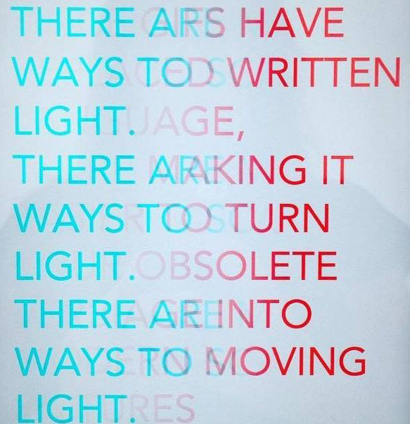

There Are Many Ways to Scatter Light
The GIF has a nervous shudder, marking the tension between closed repetition and unending ongoingness, stuck but unresolved. It emphasizes the flicker of cinema, but strips it of plot and context. Inspired in part by the work of Young-Hae Chang Heavy Industries, this piece explores the imperative of the GIF's particular flicker. Here text eats its own tail, rubs like a worry stone against before and after--all meaning flattened to 'content.' The GIF is a trick of the light, always in an eerie fixed flux, flapping open and closed like a blabbing mouth that replaces language itself. The GIF unfurls but never escapes, irritates but never tires, as much always-already as always-almost.